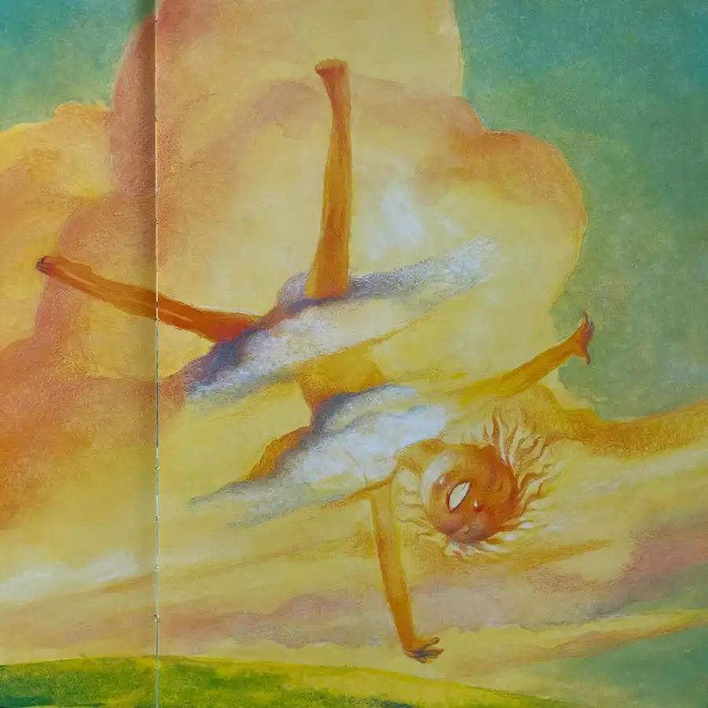
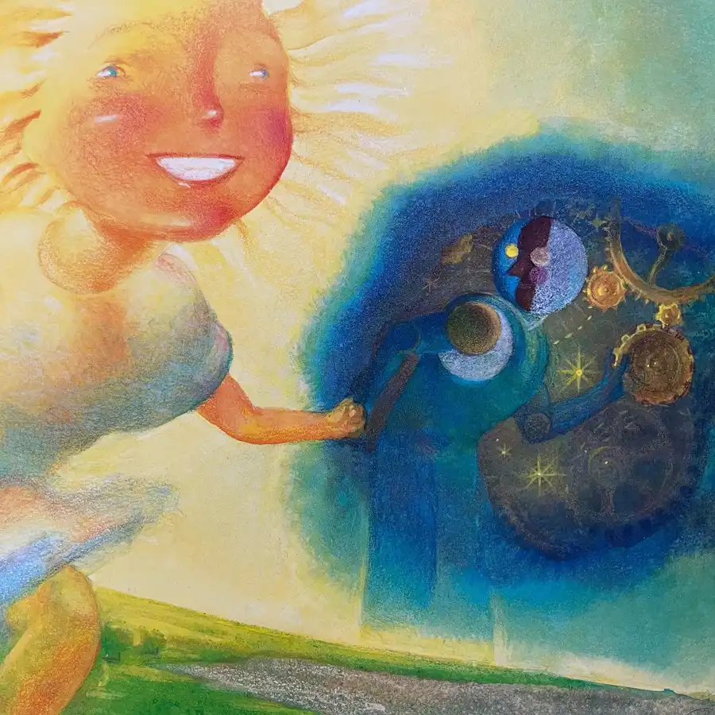
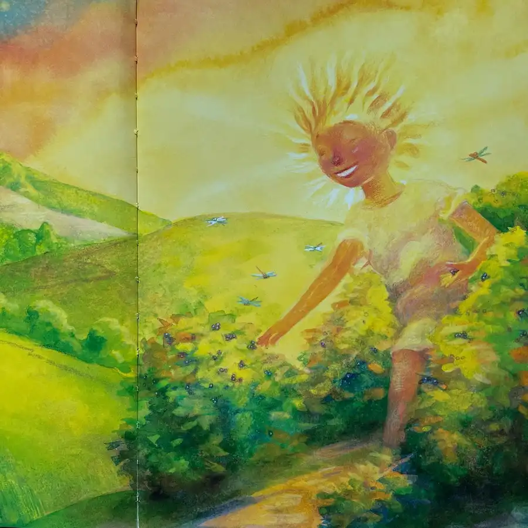
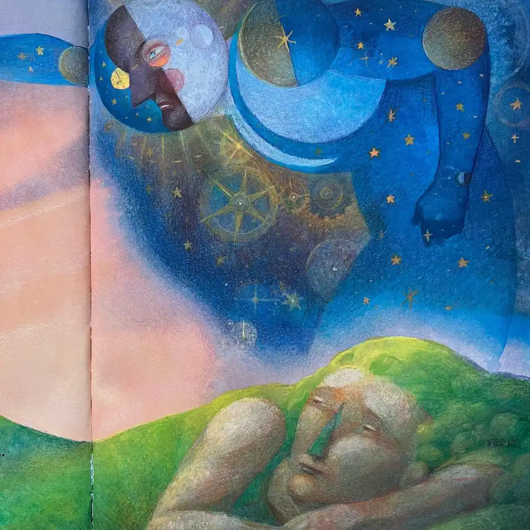
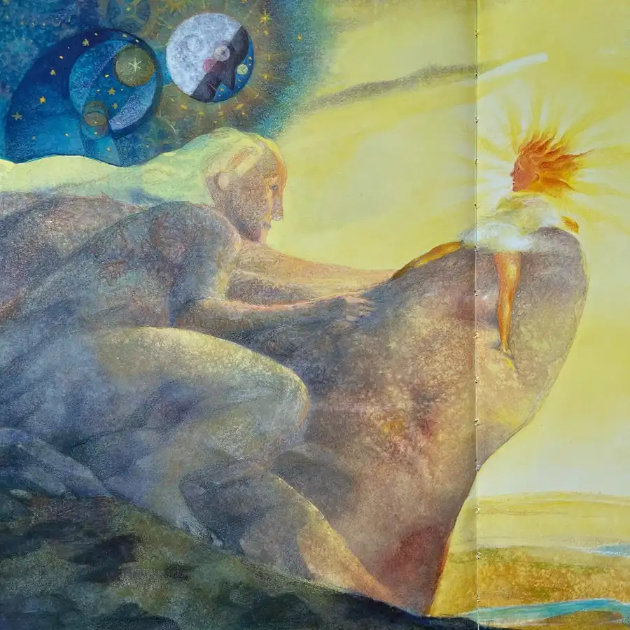
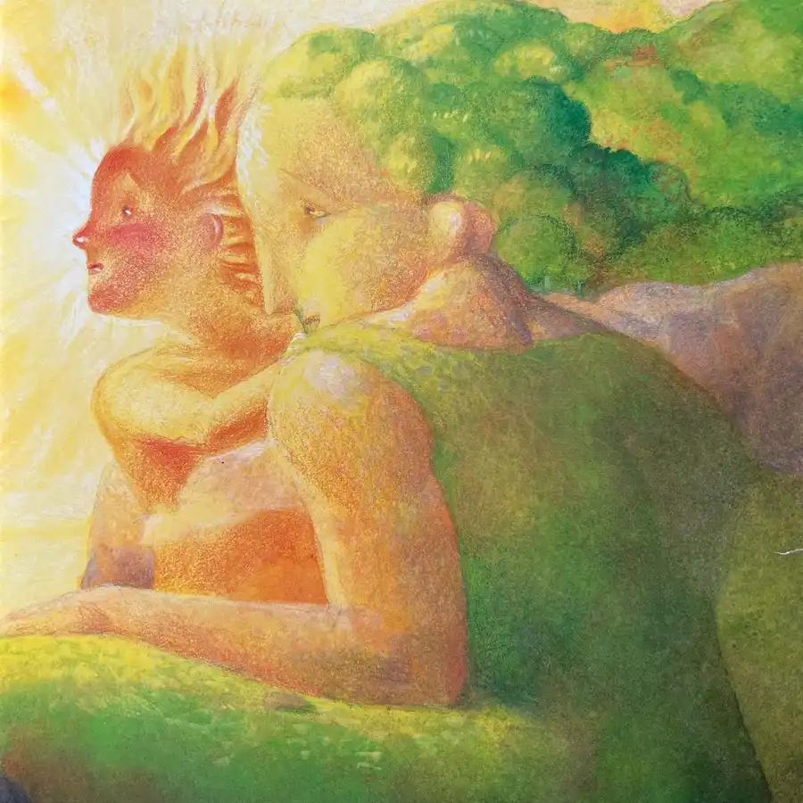
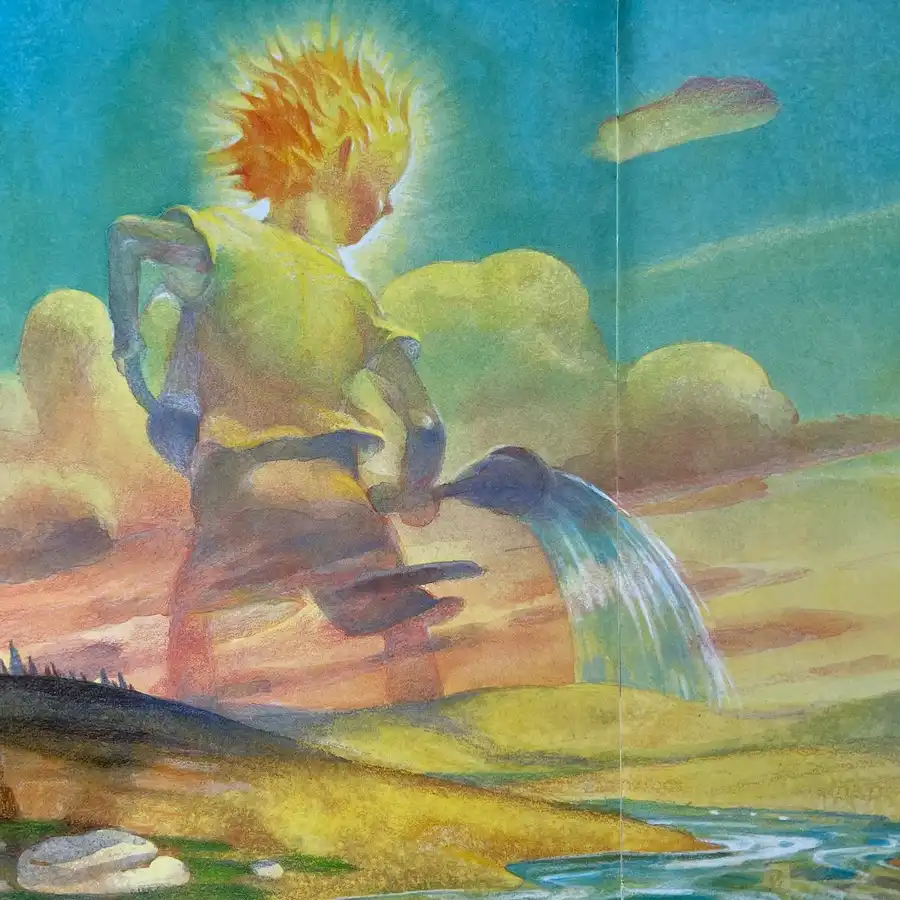
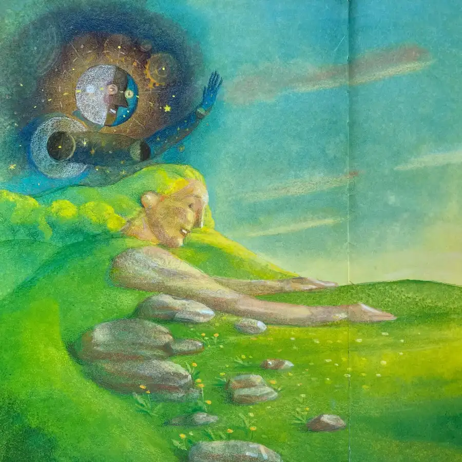
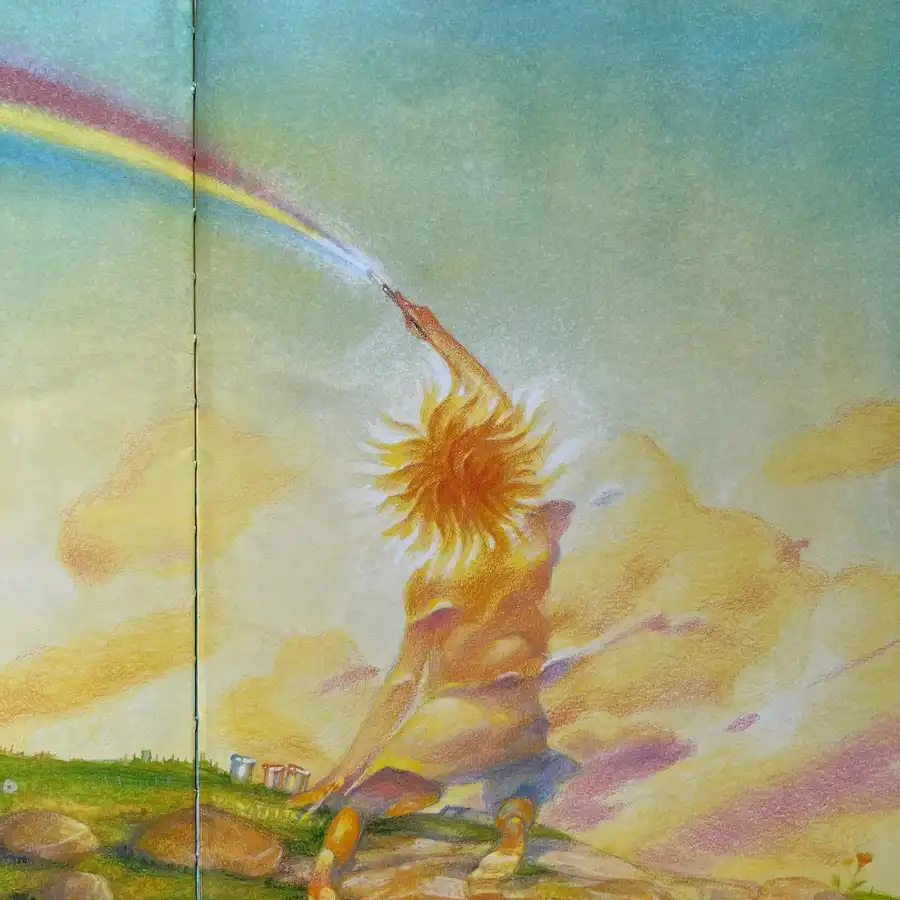

Today is the summer solstice: the first day of summer. With the turning of the season, I’m relishing Summer’s Vacation, an allegorical tale by Lynn Plourde and Greg Couch. It is the beginning of vacation, and young Summer wishes to leap and play all day without a care in the world. Her parents, Mother Earth and Father Time, remind her sternly to compete her chores. However, she procrastinates for so long that the green of the land begins to vanish. Summer must fetch her watering can to revive the plant life and heal the world. Plourde unfurls her original story in rhyming quatrains, while Couch illustrates the mythical proceedings in acrylic and colored pencil on museum board. #summer #vacation #mother #earth #motherearth #father #time #play #season #seasons #nature #book #books #picturebook #picturebooks #picturebookillustration #childrensbookillustration #childrensliterature #illustration #kidlit #kidsbooks #bookworm #booklover #booklovers #bibliophile #bookstagram #bookstagrammer #bookstagrammers #instabook #instabooks









